Блюда на праздничный стол
Салаты, закуски и горячее для гостей. 169 рецептов: у каждого время, калории и БЖУ на порцию, пошаговые инструкции и список покупок
- Лаваш-ролл с сыром и зеленью15 мин · 332 ккал · Б 13 г · Закуска
- Крабовые палочки в кляре15 мин · 439 ккал · Б 21 г · Второе блюдо
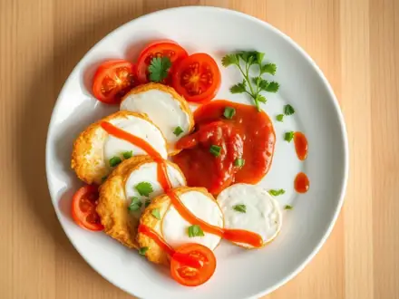
Жареный сулугуни с помидорами15 мин · 570 ккал · Б 31 г · Второе блюдо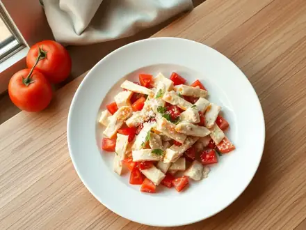
Салат «Красное море» с крабовыми палочками и помидорами15 мин · 275 ккал · Б 11 г · Салат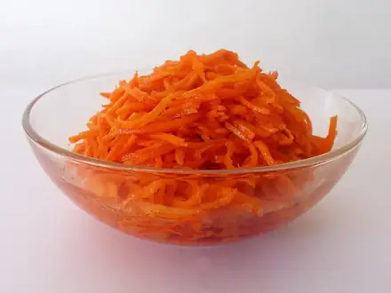
Морковь по-корейски20 мин · 136 ккал · Б 1 г · Салат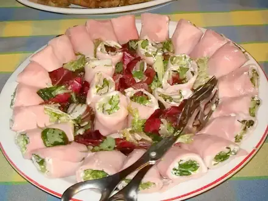
Рулетики из ветчины с сыром и чесноком20 мин · 283 ккал · Б 14 г · Закуска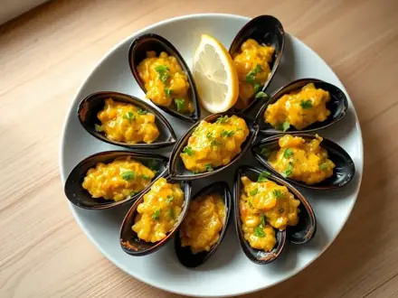
Мидии, запечённые с сыром и чесноком20 мин · 532 ккал · Б 46 г · Второе блюдо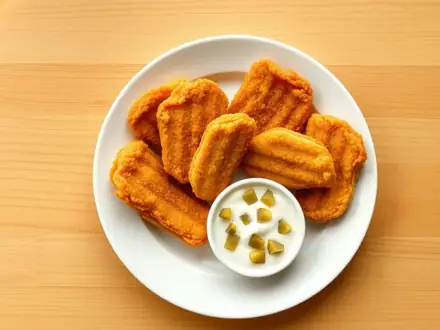
Жареный сыр в панировке по-чешски20 мин · 724 ккал · Б 34 г · Второе блюдо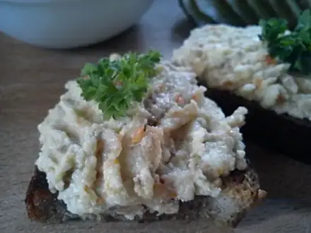
Форшмак из сельди25 мин · 234 ккал · Б 13 г · Закуска- Мини-пиццы на лаваше25 мин · 375 ккал · Б 20 г · Закуска
- Креветки в кляре25 мин · 513 ккал · Б 37 г · Второе блюдо
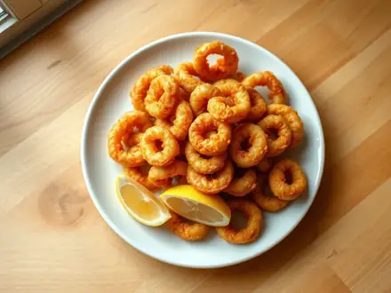
Кольца кальмаров в кляре25 мин · 488 ккал · Б 36 г · Второе блюдо- Лосось в медово-горчичном соусе в духовке25 мин · 419 ккал · Б 35 г · Второе блюдо
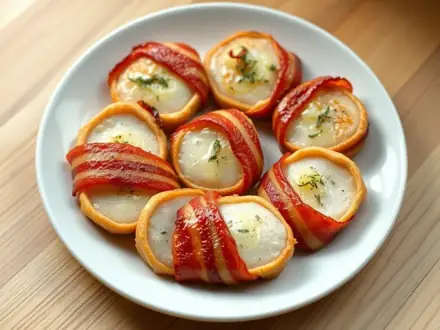
Медальоны из индейки в беконе на сковороде25 мин · 507 ккал · Б 56 г · Второе блюдо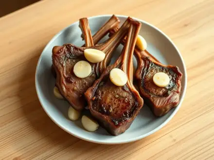
Каре ягнёнка на сковороде с чесноком25 мин · 682 ккал · Б 40 г · Второе блюдо- Сосиски в беконе с сыром в духовке25 мин · 604 ккал · Б 28 г · Второе блюдо
- Омлетный рулет с ветчиной и сыром в духовке25 мин · 406 ккал · Б 26 г · Второе блюдо
- Яйца кокот с ветчиной и сливками25 мин · 440 ккал · Б 25 г · Второе блюдо
- Фриттата с беконом и помидорами25 мин · 424 ккал · Б 27 г · Второе блюдо
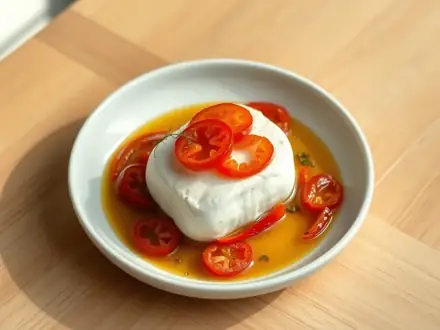
Бугиурди - фета, запечённая с помидорами и перцем25 мин · 387 ккал · Б 20 г · Второе блюдо Салат с курицей, черносливом и грецкими орехами25 мин · 605 ккал · Б 36 г · Салат
Салат с курицей, черносливом и грецкими орехами25 мин · 605 ккал · Б 36 г · Салат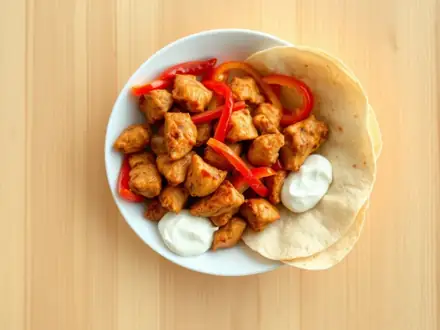
Фахитос с курицей и болгарским перцем25 мин · 669 ккал · Б 47 г · Второе блюдо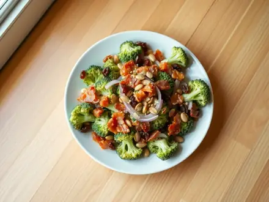
Салат с брокколи, беконом и изюмом25 мин · 369 ккал · Б 11 г · Салат- Яйца, фаршированные сыром и чесноком25 мин · 254 ккал · Б 15 г · Закуска
- Яйца, фаршированные тунцом25 мин · 240 ккал · Б 22 г · Закуска
- Начос из тортильи с сыром и сальсой25 мин · 373 ккал · Б 15 г · Закуска
- Бутерброды-ёжики (канапе)30 мин · 299 ккал · Б 13 г · Закуска
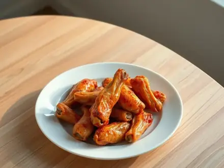
Хрустящие куриные крылья в духовке30 мин · 364 ккал · Б 32 г · Второе блюдо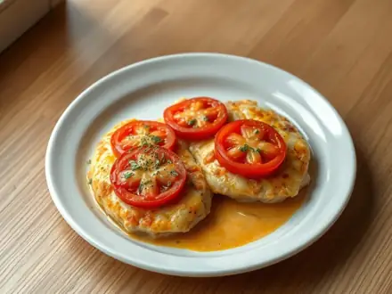
Куриные отбивные с помидорами и сыром в духовке30 мин · 442 ккал · Б 59 г · Второе блюдо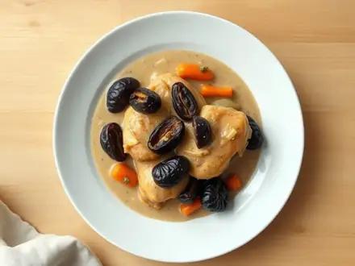
Курица с черносливом в сметане30 мин · 599 ккал · Б 39 г · Второе блюдо- Кордон блю из свинины30 мин · 771 ккал · Б 39 г · Второе блюдо
- Сувлаки из свинины на сковороде30 мин · 535 ккал · Б 27 г · Второе блюдо
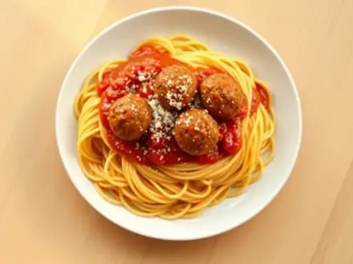
Спагетти с фрикадельками в томатном соусе30 мин · 667 ккал · Б 29 г · Второе блюдо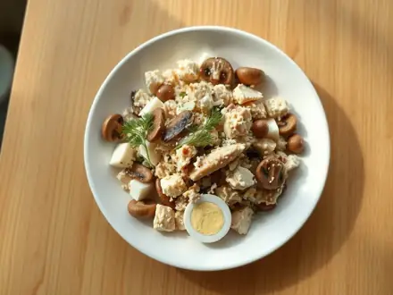
Салат с курицей, жареными грибами и сыром30 мин · 456 ккал · Б 35 г · Салат- Ленивая ачма из лаваша30 мин · 531 ккал · Б 24 г · Второе блюдо
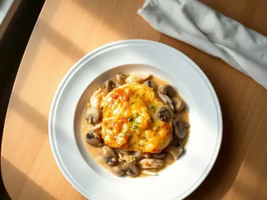
Жульен с курицей и грибами30 мин · 410 ккал · Б 37 г · Второе блюдо- Куриные крылья с чесноком и пармезаном на сковороде30 мин · 411 ккал · Б 32 г · Второе блюдо
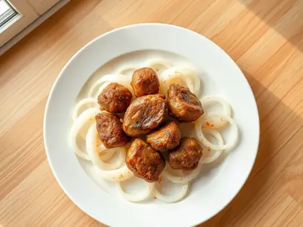
Шашлык из свинины на сковороде30 мин · 553 ккал · Б 28 г · Второе блюдо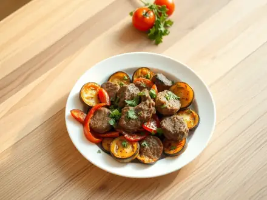
Садж из баранины с овощами на сковороде30 мин · 530 ккал · Б 27 г · Второе блюдо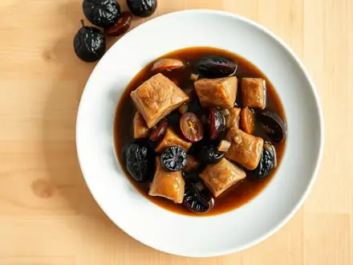
Свинина с черносливом на сковороде30 мин · 571 ккал · Б 26 г · Второе блюдо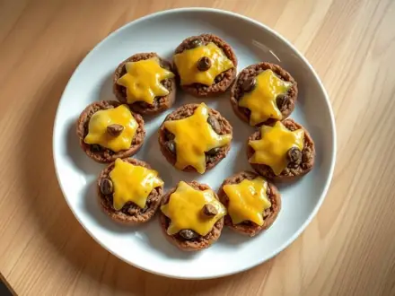
Мясные гнёзда с грибами и сыром в духовке30 мин · 527 ккал · Б 32 г · Второе блюдо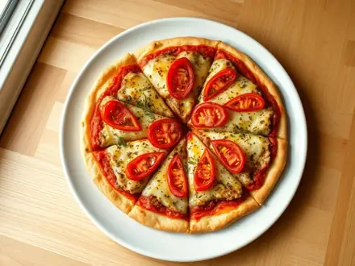
Пицца из фарша без теста в духовке30 мин · 507 ккал · Б 34 г · Второе блюдо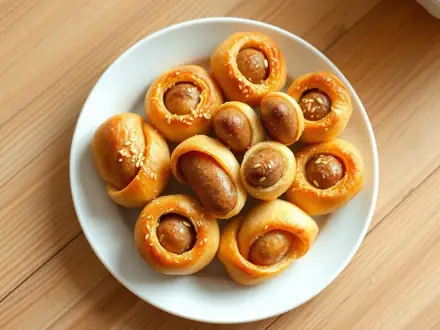
Сосиски в слоёном тесте в духовке30 мин · 652 ккал · Б 19 г · Второе блюдо- Рыба по-французски из минтая в духовке30 мин · 469 ккал · Б 44 г · Второе блюдо
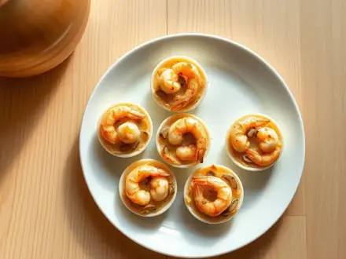
Жюльен с креветками и грибами30 мин · 395 ккал · Б 31 г · Второе блюдо- Кальмары, фаршированные яйцом и сыром, в духовке30 мин · 681 ккал · Б 60 г · Второе блюдо
- Шашлычки из сёмги с овощами в духовке30 мин · 442 ккал · Б 35 г · Второе блюдо
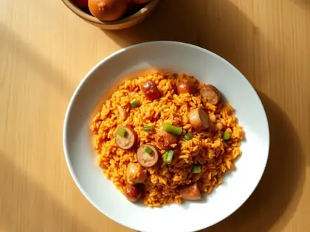
Джамбалая с курицей и колбасками30 мин · 598 ккал · Б 25 г · Второе блюдо Аранчини из вчерашнего риса с моцареллой30 мин · 658 ккал · Б 22 г · Второе блюдо
Аранчини из вчерашнего риса с моцареллой30 мин · 658 ккал · Б 22 г · Второе блюдо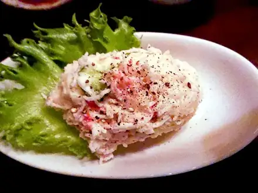
Крабовый салат35 мин · 345 ккал · Б 12 г · Салат- Пицца на сковороде из готового теста35 мин · 624 ккал · Б 25 г · Выпечка
- Буррито с курицей35 мин · 649 ккал · Б 42 г · Второе блюдо
 Куриные наггетсы в духовке35 мин · 348 ккал · Б 40 г · Второе блюдо
Куриные наггетсы в духовке35 мин · 348 ккал · Б 40 г · Второе блюдо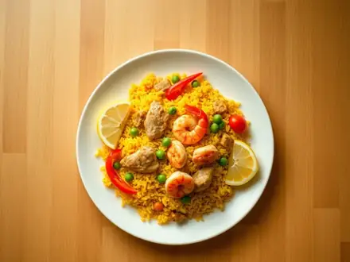
Паэлья с курицей и креветками35 мин · 615 ккал · Б 37 г · Второе блюдо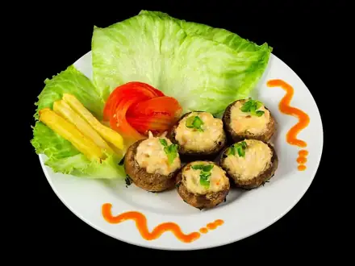
Фаршированные шампиньоны в духовке40 мин · 192 ккал · Б 13 г · Закуска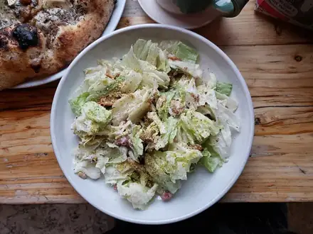
Цезарь с курицей40 мин · 626 ккал · Б 45 г · Салат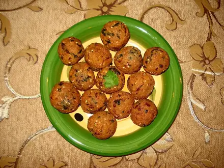
Фалафель40 мин · 445 ккал · Б 13 г · Второе блюдо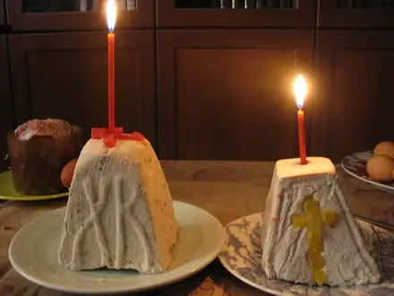
Творожная пасха без выпечки40 мин · 349 ккал · Б 18 г · Десерт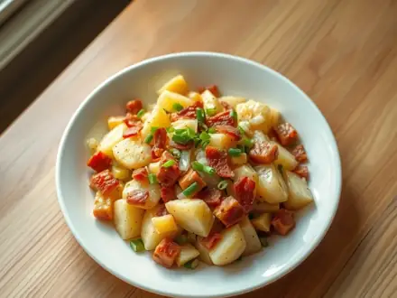
Картофельный салат по-немецки с беконом и огурцами40 мин · 346 ккал · Б 11 г · Салат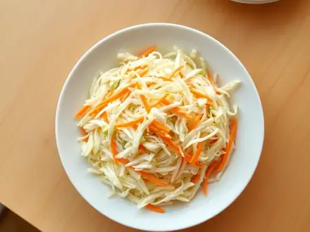
Коулслоу - американский салат из капусты в сливочной заправке40 мин · 169 ккал · Б 4 г · Салат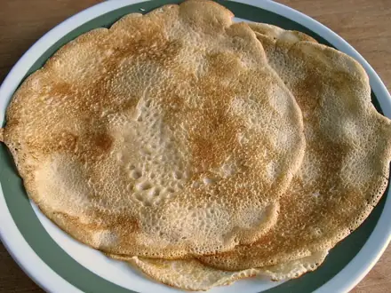
Блины на молоке45 мин · 379 ккал · Б 12 г · Завтрак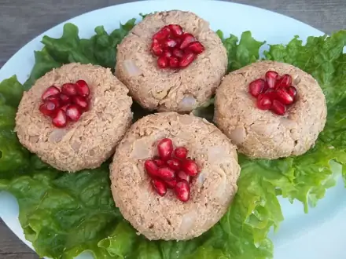
Пхали из шпината45 мин · 198 ккал · Б 8 г · Закуска- Рулет из лаваша с ветчиной, сыром и огурцом45 мин · 283 ккал · Б 13 г · Закуска
- Рулет из лаваша с красной рыбой и сливочным сыром45 мин · 241 ккал · Б 11 г · Закуска
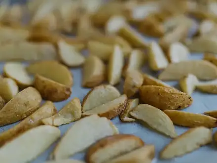
Картофель дольками в духовке50 мин · 290 ккал · Б 5 г · Гарнир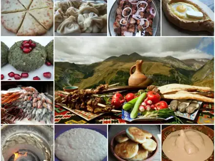
Хачапури по-имеретински на сковороде50 мин · 800 ккал · Б 36 г · Выпечка- Куриные рулетики с сыром50 мин · 321 ккал · Б 44 г · Второе блюдо
- Блинчики с ветчиной и сыром50 мин · 573 ккал · Б 27 г · Завтрак
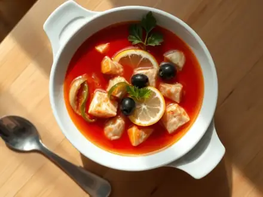
Солянка рыбная50 мин · 259 ккал · Б 24 г · Суп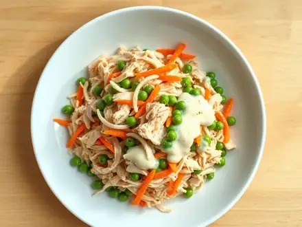
Салат «Купеческий» с курицей и маринованным луком50 мин · 277 ккал · Б 18 г · Салат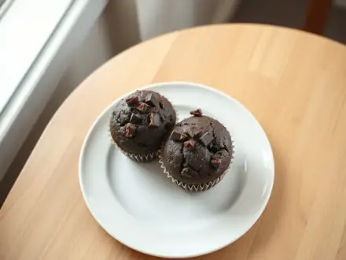
Шоколадные маффины с кусочками шоколада50 мин · 265 ккал · Б 5 г · Выпечка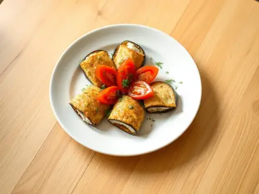
Рулетики из баклажанов с сыром и чесноком50 мин · 331 ккал · Б 10 г · Закуска- Сырные палочки из моцареллы в панировке50 мин · 463 ккал · Б 23 г · Закуска
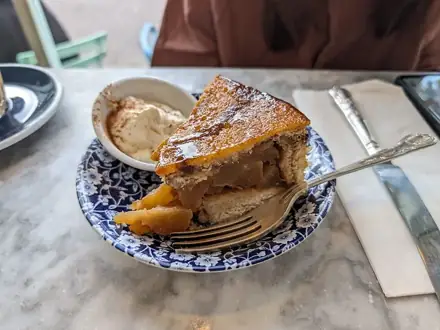
Шарлотка с яблоками60 мин · 251 ккал · Б 6 г · Выпечка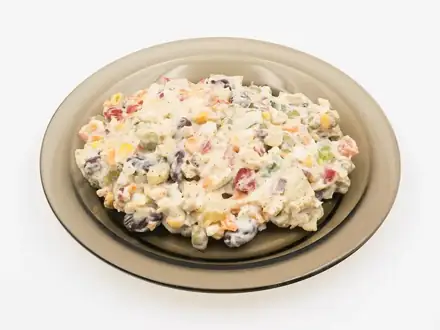
Оливье60 мин · 494 ккал · Б 16 г · Салат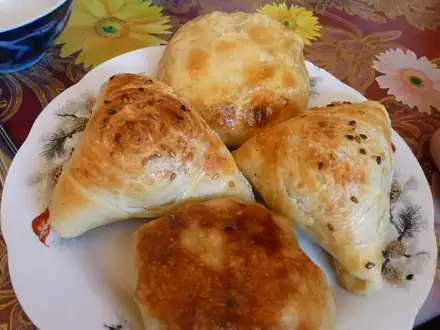
Самса из слоёного теста60 мин · 478 ккал · Б 17 г · Выпечка- Домашние роллы с огурцом и тунцом60 мин · 384 ккал · Б 21 г · Закуска
- Киш лорен60 мин · 631 ккал · Б 23 г · Выпечка
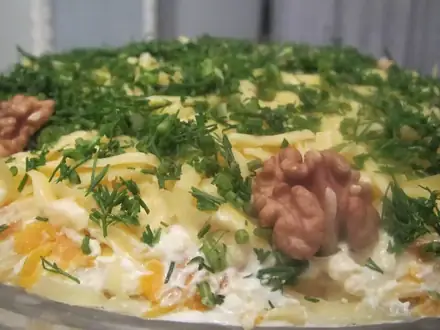
Салат Мимоза с сардинами60 мин · 455 ккал · Б 21 г · Салат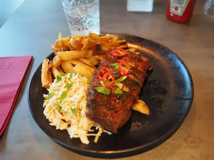
Мясо по-французски60 мин · 615 ккал · Б 31 г · Второе блюдо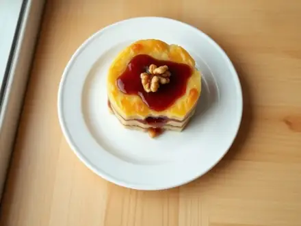
Гурьевская каша60 мин · 536 ккал · Б 13 г · Завтрак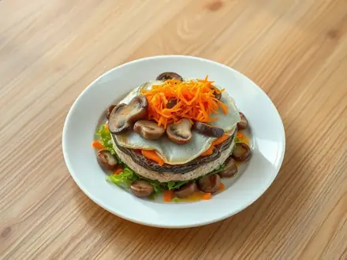
Салат «Лисья шубка» с селёдкой и грибами60 мин · 377 ккал · Б 14 г · Салат- Слоёный печёночный салат с морковью и луком60 мин · 383 ккал · Б 21 г · Салат
- Картофельные крокеты в сухарях60 мин · 384 ккал · Б 9 г · Гарнир
- Слойки с ветчиной и сыром из готового теста60 мин · 368 ккал · Б 13 г · Выпечка
- Брауни шоколадный с орехами60 мин · 335 ккал · Б 5 г · Десерт
- Тарталетки из слоёного теста с курицей и грибами60 мин · 441 ккал · Б 23 г · Закуска
- Карп, запечённый целиком в духовке60 мин · 372 ккал · Б 38 г · Второе блюдо
- Чахохбили из курицы70 мин · 596 ккал · Б 42 г · Второе блюдо
- Гефилте фиш (рыбные котлеты в бульоне)70 мин · 249 ккал · Б 34 г · Второе блюдо
- Чили кон карне70 мин · 550 ккал · Б 31 г · Второе блюдо
- Картофель-гармошка в духовке (хассельбек)70 мин · 316 ккал · Б 7 г · Гарнир
- Сосиски в тесте в духовке70 мин · 275 ккал · Б 10 г · Выпечка
- Гозинаки с грецкими орехами и мёдом70 мин · 346 ккал · Б 6 г · Десерт
- Рататуй75 мин · 186 ккал · Б 4 г · Второе блюдо
- Винегрет75 мин · 178 ккал · Б 4 г · Салат
- Лагман75 мин · 798 ккал · Б 37 г · Второе блюдо
- Куриные шашлычки в духовке75 мин · 232 ккал · Б 37 г · Второе блюдо
- Тажин из курицы с курагой по-мароккански75 мин · 708 ккал · Б 48 г · Второе блюдо
- Кугель картофельный80 мин · 290 ккал · Б 7 г · Гарнир
- Кокосовые конфеты «Рафаэлло» домашние80 мин · 368 ккал · Б 7 г · Десерт
- Картофельный гратен со сливками в духовке85 мин · 381 ккал · Б 11 г · Гарнир
- Чак-чак90 мин · 390 ккал · Б 8 г · Десерт
- Мачанка с блинами90 мин · 905 ккал · Б 35 г · Второе блюдо
- Мясной рулет из фарша с яйцом в духовке90 мин · 576 ккал · Б 36 г · Второе блюдо
- Курица целиком в духовке100 мин · 502 ккал · Б 37 г · Второе блюдо
- Эчпочмак100 мин · 721 ккал · Б 27 г · Выпечка
- Селёдка под шубой100 мин · 437 ккал · Б 16 г · Салат
- Салат «Гранатовый браслет» с курицей и свёклой100 мин · 349 ккал · Б 18 г · Салат
- Имбирное печенье с мёдом100 мин · 253 ккал · Б 4 г · Выпечка
- Ростбиф из говядины в духовке100 мин · 435 ккал · Б 39 г · Второе блюдо
- Долма в капустных листьях110 мин · 417 ккал · Б 24 г · Второе блюдо
- Баурсаки110 мин · 347 ккал · Б 9 г · Выпечка
- Хачапури по-аджарски110 мин · 521 ккал · Б 24 г · Выпечка
- Солянка мясная120 мин · 401 ккал · Б 22 г · Суп
- Хумус120 мин · 290 ккал · Б 10 г · Закуска
- Чанахи в горшочках120 мин · 499 ккал · Б 30 г · Второе блюдо
- Манты с бараниной120 мин · 651 ккал · Б 29 г · Второе блюдо
- Беляши (перемячи)120 мин · 605 ккал · Б 22 г · Выпечка
- Лазанья с мясом120 мин · 744 ккал · Б 35 г · Второе блюдо
- Мусака120 мин · 563 ккал · Б 25 г · Второе блюдо
- Медовик упрощённый120 мин · 485 ккал · Б 8 г · Десерт
- Дрожжевые блины на молоке120 мин · 446 ккал · Б 13 г · Завтрак
- Гуляш-суп по-венгерски120 мин · 341 ккал · Б 22 г · Суп
- Кекс «Столичный» с изюмом120 мин · 326 ккал · Б 5 г · Выпечка
- Пицца домашняя в духовке на дрожжевом тесте120 мин · 399 ккал · Б 20 г · Выпечка
- Голубцы с мясом и рисом классические120 мин · 516 ккал · Б 24 г · Второе блюдо
- Пельмени домашние с мясом120 мин · 658 ккал · Б 28 г · Второе блюдо
- Свинина гармошкой с помидорами и сыром в духовке120 мин · 657 ккал · Б 40 г · Второе блюдо
- Плов с говядиной130 мин · 880 ккал · Б 33 г · Второе блюдо
- Кюфта-бозбаш130 мин · 366 ккал · Б 21 г · Суп
- Говядина тушёная с фасолью130 мин · 392 ккал · Б 31 г · Второе блюдо
- Салат «Мужской каприз» с говядиной и маринованным луком130 мин · 398 ккал · Б 23 г · Салат
- Осетинский пирог с картофелем и сыром130 мин · 408 ккал · Б 14 г · Выпечка
- Говядина, тушённая с черносливом130 мин · 530 ккал · Б 36 г · Второе блюдо
- Фокачча с чесноком и травами135 мин · 286 ккал · Б 7 г · Выпечка
- Борщ150 мин · 349 ккал · Б 23 г · Суп
- Шурпа из баранины150 мин · 462 ккал · Б 30 г · Суп
- Плов узбекский с бараниной150 мин · 996 ккал · Б 31 г · Второе блюдо
- Курник упрощённый с курицей и картошкой150 мин · 482 ккал · Б 23 г · Выпечка
- Шоколадные трюфели в какао150 мин · 261 ккал · Б 3 г · Десерт
- Хашлама из баранины по-армянски150 мин · 549 ккал · Б 36 г · Второе блюдо
- Бигос с квашеной капустой и мясом150 мин · 579 ккал · Б 28 г · Второе блюдо
- Сациви из курицы с грецкими орехами150 мин · 565 ккал · Б 33 г · Второе блюдо
- Курица, фаршированная гречкой с грибами150 мин · 527 ккал · Б 37 г · Второе блюдо
- Свиные рёбра в духовке160 мин · 721 ккал · Б 33 г · Второе блюдо
- Булочки с корицей160 мин · 308 ккал · Б 6 г · Выпечка
- Закусочный торт из лаваша с крабовыми палочками160 мин · 364 ккал · Б 14 г · Закуска
- Паштет из куриной печени со сливочным маслом160 мин · 210 ккал · Б 12 г · Закуска
- Буженина домашняя из свинины в духовке165 мин · 520 ккал · Б 31 г · Второе блюдо
- Хала180 мин · 270 ккал · Б 8 г · Выпечка
- Холодец из курицы с желатином180 мин · 163 ккал · Б 19 г · Закуска
- Шоколадный торт на кефире со сметанным кремом180 мин · 381 ккал · Б 7 г · Десерт
- Утка с апельсинами в духовке180 мин · 674 ккал · Б 34 г · Второе блюдо
- Говяжий язык отварной с хреном180 мин · 341 ккал · Б 28 г · Второе блюдо
- Блинный торт со сметанным кремом190 мин · 380 ккал · Б 9 г · Десерт
- Утка с яблоками в духовке200 мин · 714 ккал · Б 36 г · Второе блюдо
- Торт «Муравейник» со сгущёнкой200 мин · 459 ккал · Б 6 г · Десерт
- Шоколадный мусс200 мин · 399 ккал · Б 9 г · Десерт
- Бешбармак210 мин · 796 ккал · Б 49 г · Второе блюдо
- Салат с говяжьим языком, огурцом и грибами210 мин · 367 ккал · Б 20 г · Салат
- Торт «Птичье молоко» домашний без коржа230 мин · 344 ккал · Б 5 г · Десерт
- Баскский чизкейк260 мин · 316 ккал · Б 7 г · Десерт
- Панна-котта с ягодным соусом260 мин · 397 ккал · Б 6 г · Десерт
- Кулич пасхальный300 мин · 432 ккал · Б 9 г · Выпечка
- Яблочный зефир домашний на желатине300 мин · 206 ккал · Б 2 г · Десерт
- Маринованные шампиньоны домашние390 мин · 136 ккал · Б 6 г · Закуска
- Торт «Наполеон» из готового слоёного теста420 мин · 390 ккал · Б 7 г · Десерт
- Скумбрия малосольная кусочками735 мин · 186 ккал · Б 12 г · Закуска
Другие подборки
- Что приготовить из курицы
- Что приготовить из фарша
- Что приготовить из мяса
- Что приготовить из рыбы
- Что приготовить из картошки
- Что приготовить из яиц
- Что приготовить из творога
- Что приготовить из кабачков
- Что приготовить из капусты
- Что приготовить из грибов
- Что приготовить из риса
- Что приготовить из макарон
- Что приготовить из гречки
- Быстрый ужин за 30 минут
- Быстрый завтрак за 20 минут
- Что приготовить на скорую руку
- ПП-рецепты: лёгкие блюда до 400 ккал
- Белковые блюда: от 25 г белка на порцию
- Дешёвые рецепты из простых продуктов
- Что приготовить ребёнку
- Постные блюда
- Блюда на пару
- Что приготовить в духовке
- Простые супы
- Простые салаты
- Выпечка и десерты
- Что приготовить из остатков